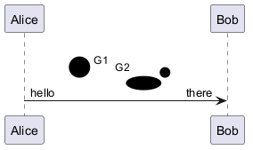

@startuml
!pragma svgparser sax
sprite styledSprite <svg viewBox="0 0 140 60" xmlns="http://www.w3.org/2000/svg">
<style type="text/css"><![CDATA[
/* group-level fill applied to all shapes inside .grp1 */
g.grp1 { fill: #FF6666; }
/* group-level paint for stroked shapes; shapes inside .grp2 inherit stroke */
g.grp2 .shape { stroke: #0066CC; stroke-width: 4; fill: none; stroke-linecap: round; }
/* text rule - applies to text elements unless overridden */
text { font-family: Verdana, sans-serif; font-size: 12px; fill: #222; }
/* id selector to target a single element */
#accent { fill: #FFD700; }
]]></style>
<!-- Group 1: shapes inherit fill from group -->
<g class="grp1" transform="translate(8,8)">
<circle cx="16" cy="16" r="12"/> <!-- inherits fill: #FF6666 -->
<text x="40" y="20">G1</text> <!-- inherits text styling -->
</g>
<!-- Group 2: shapes inherit stroke from group rules (use class 'shape') -->
<g class="grp2" transform="translate(8,36)">
<path class="shape" d="M0 10 L48 10"/> <!-- stroke from CSS -->
<ellipse class="shape" cx="88" cy="6" rx="20" ry="8"/> <!-- stroke from CSS -->
<text x="64" y="28">G2</text>
</g>
<!-- Element-level override (id selector) -->
<circle id="accent" cx="120" cy="30" r="6"/>
</svg>
Alice -> Bob : hello <$styledSprite> there
@enduml